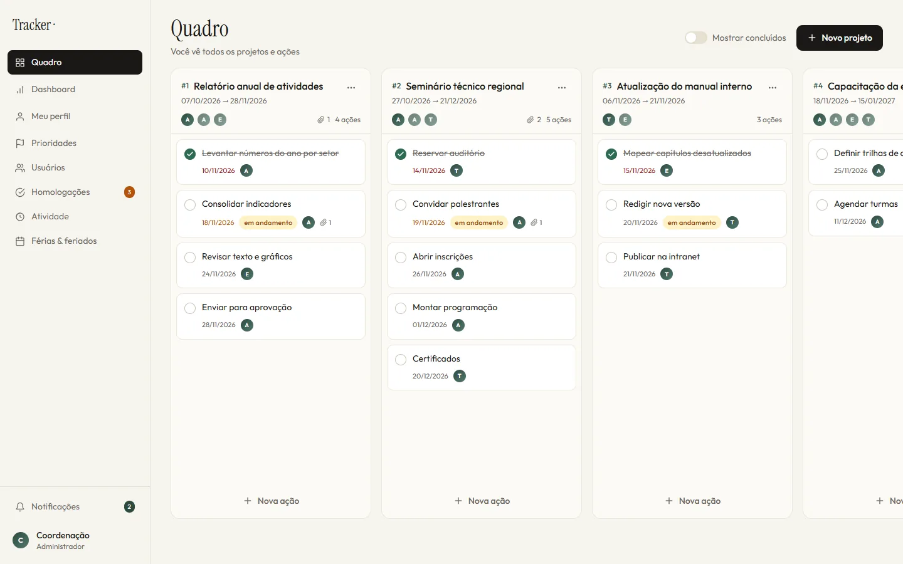
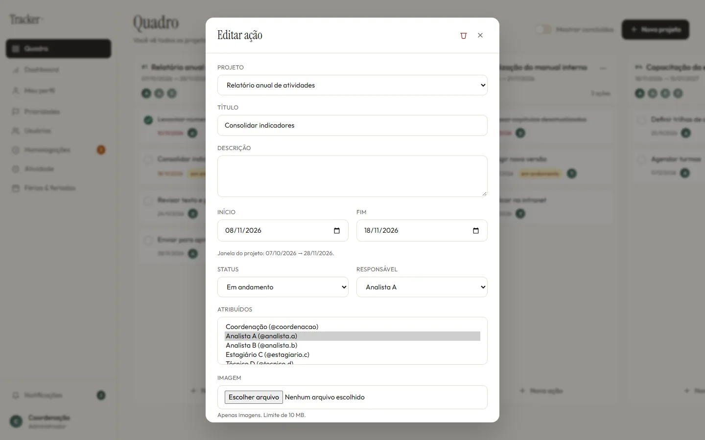
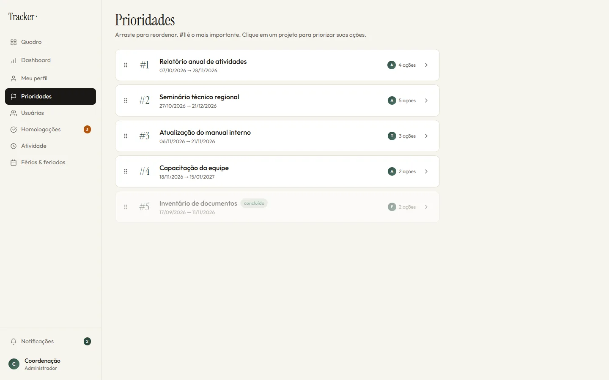
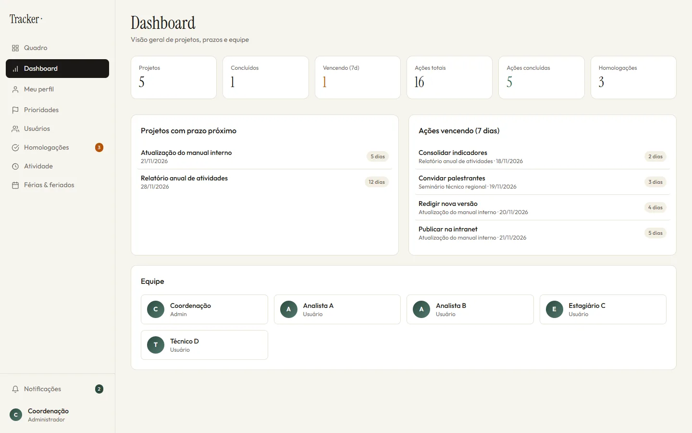
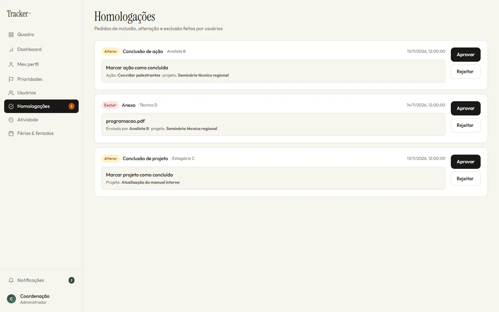
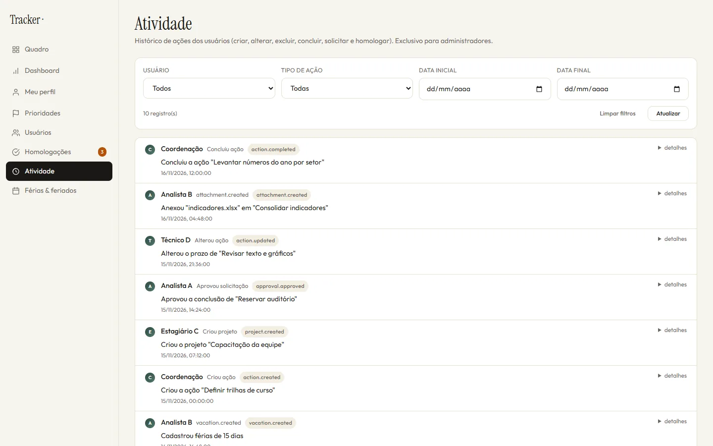
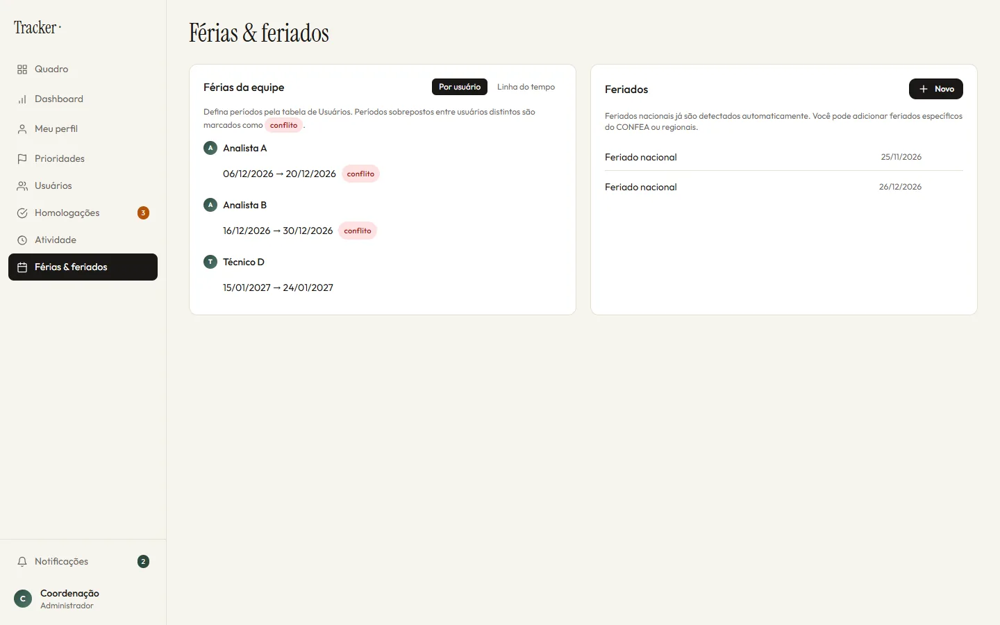

PortfólioSistemas e plataformas
Planner de projetos
Aplicação de gestão de projetos no formato de quadros, usada pela equipe do Gabinete da Presidência do Crea-SP.
- Instituição
- Crea-SP
- Formato
- Página única
- Dados
- Supabase
- Anexos
- Até 10 MB
Telas
Telas reproduzidas a partir do código da aplicação, com o banco trocado por dados fictícios. Dados fictícios.














Fluxo de páginas
Página única. O usuário comum vê só os projetos e ações em que está atribuído.
Acesso
Loginusuário ou e-mail e senha
Trabalho
Quadroprojetos e ações
Prioridadesordem dos projetos e das ações
Dashboardprazos e equipe
Meu perfildados e senha
Administração
Usuáriosperfis e férias
Homologaçõesaprovar ou rejeitar
Atividadehistórico
Férias e feriadosconflitos e datas
Funcionalidades
- QuadroProjetos em colunas e ações em cartões. Arrastar muda a ordem ou o projeto da ação.
- AçõesSituação pendente, em andamento ou concluída; prazo em vermelho quando vencido.
- PrazosO formulário mostra a janela do projeto e avisa quando o prazo cai em feriado nacional.
- AnexosVários arquivos por projeto ou ação, até 10 MB cada, e imagem de capa.
- PerfisAdministrador vê tudo. Usuário vê o que é dele e pede aprovação para concluir ou excluir.
- Tempo realNotificações, quadro, anexos e homologações se atualizam sem recarregar a página.
Homologação e registro
Arquitetura
gerador
Python
Um script gera o arquivo index.html com a aplicação inteira.
front
Página única
Alpine.js, Tailwind e SortableJS por CDN, sem etapa de build.
banco
Supabase
Tabelas com regras de acesso por linha, Storage para anexos e Realtime.
funcao
Função no servidor
Criar, editar e excluir usuário, com registro no histórico.
Tecnologias
PythonAlpine.js 3Tailwind CSSSortableJSSupabasePostgreSQLEdge FunctionsRealtime